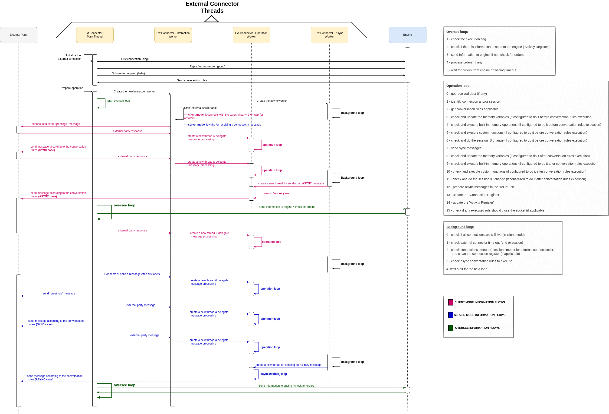

6. External Connector Software Description¶
This component is the element of Lope that connects with the third parties. As mention in the Intro, every external connector works targeting a single port, mode (client or server) and protocol (tcp or udp); using an specific set of rules for the interaction. Since Lope is designed to be able to work with several external connectors at the same time, you can run different ones under the control of the same engine (as described in the Architecture). The idea is that each external connector has one job in the interaction scenario, and there can be several of them working together. In the following image you can finde how the external connector internally works (you might need to zoom in to see the details):
{kind=link}
As you can see, there are different threads working at the same time:
Main Thread: this thread is the one that starts, initializes and stops the execution. It executes the oversee loop where the connection with the engine takes place. It also executes any order provided by the engine, like the ‘end’ order to stop the execution.
Interaction Worker: this thread is the one that listens the open sockets of the external connector. If something is recevied, it creates an operation worker for managing it.
Operation Worker: this kind of threads are created every time something is received from the third parties to execute the corresponding conversation rules. It executes the Operation loop, but not all steps are always executed. Depending on the context and the configuration, some of them are skipped.
Async Worker: this thread is the one that controls the timeouts of the external connection and its connections, as well as the async taks (conversation rules) to exectue. It operates the backgroud loop that allows to do those activities.
In the previous image, there are two registers mentioned in the leyend. They are internal registers that are used to control the external connector execution:
Connection Register: This allows to control the status of each connection established with third parties (active or not, the memory variables, etc.).
Activity Register: This collects any event or conversation rule executed for every connection, saving it as an activity. The main thread checks if there are activities periodically, to send them to the engine. These activities, or external activities, are described in detail in Activity Alerting & Storage.
Other relevant information about the external connector is that it will try 3 times to send a message to the engine. In case it does not reply, in any message to send to the engine. Additionally, the external connector will try to initialize the execution 3 times as well, in case it is not able to do it. This can result that there are 9 attempts to contact the engine, if the initialization cannot happen if the engine is not responding.